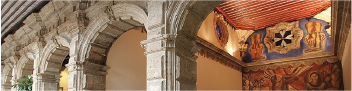

LOS AZULEJOS

Se sabe que la construcción original fue levantada en el siglo XVI, y que en realidad se encuentra conformada por la unión de dos casonas señoriales de las cuales, la que se ubicaba en un principio hacia el lado Sur, era la que pertenecía, junto a la llamada Plazuela de Guardiola a un señor de nombre Damián Martínez. Dichas propiedades, aunque separadas por un callejón, se ubicaban en ese entonces frente a la ya muy transitada y comercial Calle de Plateros, exactamente frente al Convento de San Francisco el Grande de la Ciudad de México. De la historia de esta propiedad, siendo dueño Don Damián y viéndose en apuros económicos, se ven en la necesidad de vender esta y la plazuela anexa a otro señor de nombre Diego Suárez de Peredo en el año de 1596.
Este señor al enviudar, se retiró a la orden religiosa de los franciscanos quienes tenían ya para ese entonces un convento ubicado en la ciudad de Zacatecas, en donde decide retirarse y pasar el resto de su vida, dejando así la propiedad en manos de su hija, quien se casó con el segundo conde del Valle de Orizaba de nombre Luis de Vivero. Luis era hijo del primer conde del Valle de Orizaba, [Rodribo Vivero|Rodrigo de Vivero y Aberrucia]], personaje destacado en el virreinato por su talento e instrucción, llegando a ocupar cargos importantes en el gobierno de la Nueva España, entre los que destaca el de gobernador de la Nueva Vizcaya y el de Gobernador y Capitán General de las Islas Filipinas. Don Rodrigo hereda una de sus propiedades que se encontraba anexa a la casa a su hijo (que era la casa Norte), por lo que Don Luis fue el primero de la familia en habitar las casas, las cuales ordenó unir y mandó a reparar, aunque no le dio el aspecto que actualmente posee el inmueble.